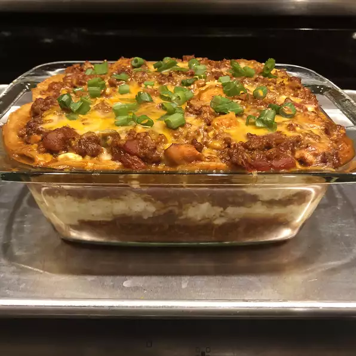

Description
This enchilada lasagna is perfect for dinner or potlucks.
Ingredients
- 1 tbs vegetable oil
- 1 onion
- 2 pounds ground turkey
- 1 can enchilada sauce
Steps
- Heat oil in a large pot over medium heat. Add onion and garlic; cook and stir until onion is translucent, about 5 minutes. Stir in ground turkey; cook until no longer pink, about 5 minutes. Drain excess grease.
- Stir enchilada sauce and diced tomatoes into the pot. Simmer until flavors combine, about 20 minutes. Remove from heat.
return to top